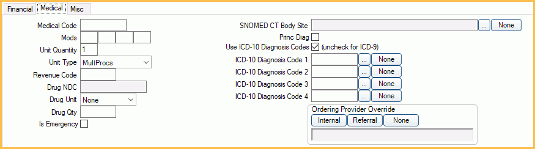

Procedure - Medical Tab
Enter information on this tab when sending medical claims or if insurance requires ICD-10 diagnosis codes attached to a procedure.
In the Procedure Edit window, click the Medical tab.
The Medical tab appears if Medical Insurance is turned on in Show Features.
Medical Code: Corresponding medical code for the dental procedure. If a default medical code is set on the Procedure Code, it will automatically show. Required when sending a medical e-claim.
Mods: Medical code modifiers.
Unit Quantity: Refers to the type. E.g., 5 (unit quantity) minutes of anesthesia (unit type). Procedure fee will be multiplied by the unit quantity.
Unit Type: Type of quantity.
- MultProcs
- MinutesAnesth
- ServiceUnits
- Days
Revenue Code: If a Default Revenue Code is set for the procedure code, it is added automatically.
Drug NDC: National Drug Code. If a default value for the procedure code is set, it is added automatically.
Drug Unit/Drug Qty: Quantity refers to the unit. E.g., 5 (drug quantity) milligrams (drug unit).
Is Emergency: Check this box when the procedure is a medical procedure. When the P1IsEmergencyfield is added to the HCFA 1500 Claim Form, the procedure will be marked as emergency.
SNOMED CT Body Site: Only visible if EHR is turned on.
- [...]: Select SNOMED CT Codes that references an anatomical site.
- None: Clear the box.
Princ Diag: Indicates that Diagnosis Code 1 is a Principal Diagnosis. At least one claim procedure must have this box checked.
Use ICD-10 Diagnosis Codes (uncheck for ICD-9): Affects this procedure only. Check the box to use ICD-10 codes. Only ICD-10 codes should be used on new claims.
ICD-9/ICD-10 Diagnosis Code 1 - 4: Enter diagnosis codes.
- Manually enter ICD-10 Codes into the box.
- [...]: Select up to four codes from Diagnosis Code pick list.
- None: Clear the box.
Ordering Provider Override: Ordering provider for procedure on claim. Provider will override any other providers. By default, there is no override and the treating provider is used. See E-Claims Complexities, Ordering Provider, for the logic.
- Internal: Select a provider from the Providers.
- Referral: Select a provider from the Referral List.
- None: Clear the override.